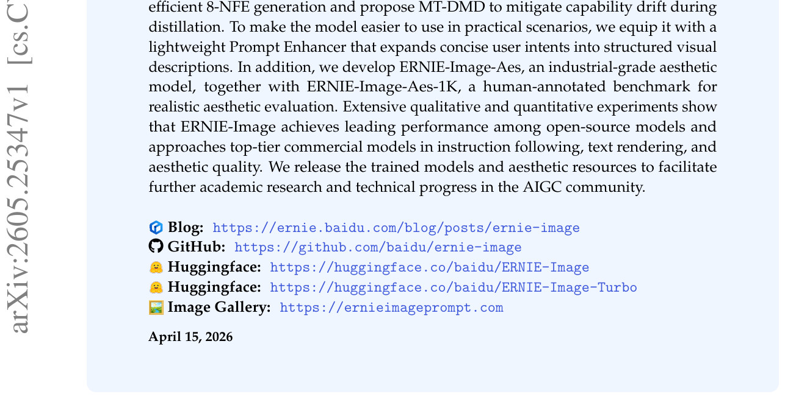
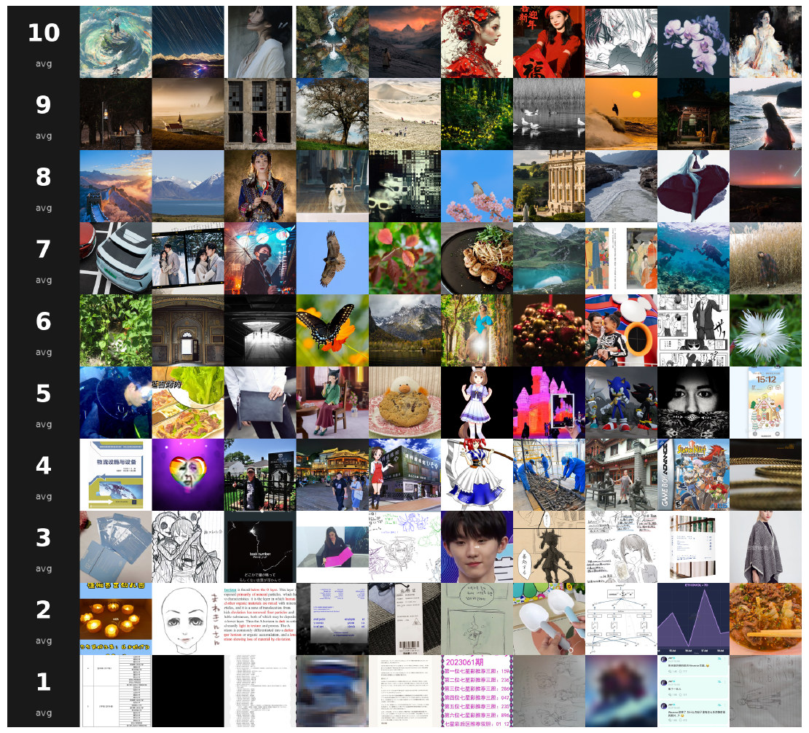
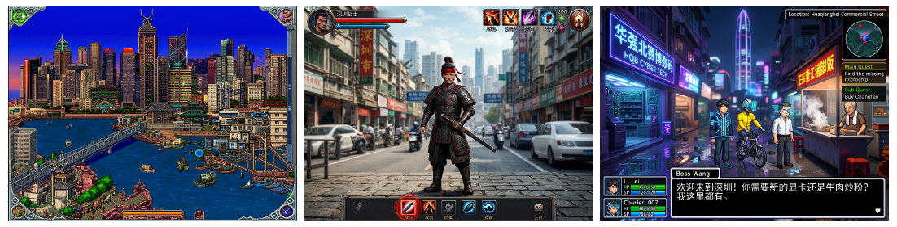
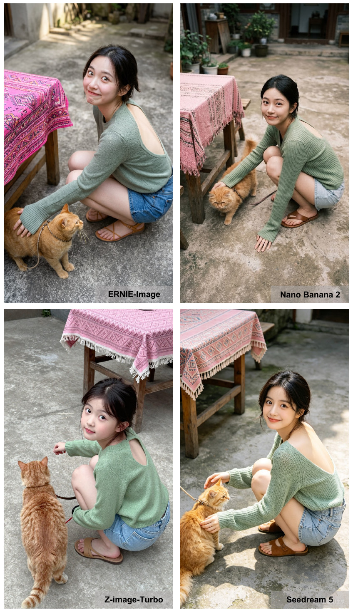
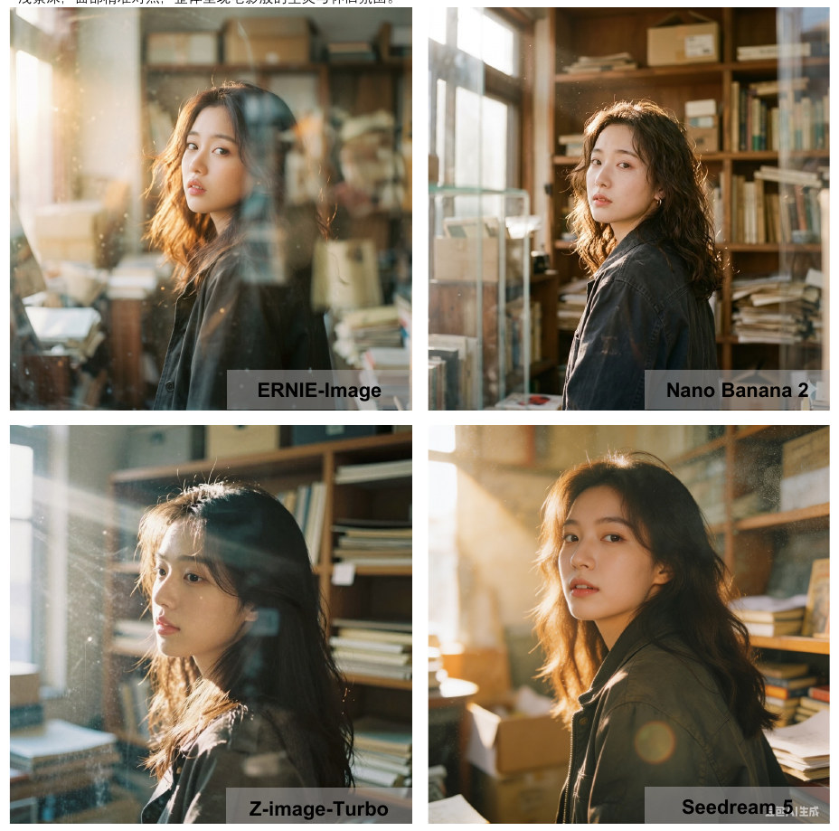

速览
版本说明：本页依据 arXiv v1（2026-05-25 提交）的全文文本，未发现更新版本信息。论文页眉写的是 April 15, 2026，与 arXiv 提交日期不同；本页主日期以 arXiv v1 为准。开源范围（ERNIE-Image、ERNIE-Image-Turbo、Prompt Enhancer、ERNIE-Image-Aes 权重 + ERIA-1K）§1；许可证原文未写。
论文首页摘要区截图含官方链接与页眉日期

五句话读完
小模型路线：8B DiT + 3B 编码器
主干 8B 单流 DiT§1，文本编码器只用 3B 的 Ministral-3，作者称小编码器仍能撑住长而复杂的指令§1（没有给对照实验）。Turbo 版 8 NFE 出图§1。
真正的重点是数据组织
预训练「自底向上」：先把内部原始图池分成 10,000 个细类，再用 VLM 写 caption（特别强调图中文字），然后用 ERNIE-Image-Aes 打美学分，最后做类间 + 类内两级采样§2.1。各步数据量和比例都没给。
开源里最强，离闭源头部还差一点
人评 Total HP 5.07，Nano Banana 2.0 为 5.39表 3。GenEval 0.89 排第一（w/o PE）表 4；LongText 0.973 是开源最高，但低于 Seedream 4.5 的 0.988表 5；OneIG-EN 0.575 排第三表 6。
美学模型和标注协议值得抄
采用瑞士轮两两比较，标注员先过校准测试，每人在自己的子集上独立跑完整个赛程，最后在数据集层面聚合§3.1。ERNIE-Image-Aes 在 ERIA-1K 上的 SRCC 是 0.7445，ArtiMuse 是 0.4277表 2。
读的时候注意：文字说法比表格更乐观
正文说 LongText 和 OneIG「SOTA」，表格里其实都不是第一表 5–7。全文没有任何消融（数据流水线、anchor loss、MT-DMD 都没有），超参只公开了 DPO 的 β 和 λ§2.2.2。
架构：三个现成组件 + 一个 8B 单流 DiT
原文没有架构图，也没给层数、隐藏维度和注意力细节。下面的示意只画原文写明的组件；文本条件怎么接进 DiT，原文没有展开。
示意，不是论文原图。只画原文 §1 / §4.1 写明的组件；虚线表示可选的 Prompt Enhancer。「单流」只是原文的称呼，token 怎么拼接、用什么注意力形式，原文都没说，这里不画。
相对同类的取舍
- 不走加参数路线。作者认为单纯扩参（引言里点名 Qwen-Image、HunyuanImage）边际收益递减；6B 的 Z-Image 在复杂指令和中文文字渲染上仍有短板§1。8B 被定位成两者之间的折中。
- 小文本编码器。原文说「不同于其他开源模型」，选 3B 的 Ministral-3 来降低显存和使用门槛，并称实验发现小编码器仍能支持长而复杂的指令§1。这组实验没有放出来。
- VAE 直接复用 FLUX.2。没有自训 VAE§1。
- PE 作为配套组件。3B 的 Prompt Enhancer 把短 prompt 扩写成长描述，因为模型「在长、详细、结构化的 prompt 下表现最好」§4.1。PE 的基座和训练数据原文都没写。
数据：预训练自底向上，SFT 自顶向下
这是论文最有料的部分，但它只讲了「怎么做」，几乎没给「多少」：规模、比例、阈值都没有。
自底向上
自顶向下
① 万类细分类：对付长尾
先训练一个图像分类模型，把每张图分到 10,000 个细粒度视觉类别之一§2.1。作用有两个：给全量数据做可扩展的语义切分，同时作为后续配平的依据，防止高频类别淹没预训练分布、保住长尾概念§2.1。分类模型的结构、类目怎么来的，原文没说。
② caption：VLM 全量重标，文字优先
所有图都用 VLM 重写 caption。除了一般的视觉描述，特别强调忠实识别并转写图中文字，因为幻灯片、说明图、海报、界面截图、文档类图片一旦漏字或错字，图文对齐就会明显变差§2.1。引言补充说，caption 模型是「微调过的强 VLM」，用来抽取结构化描述和图中文字§1（引用的是 Yang et al., 2025，即 Qwen3 报告；具体基座和微调数据没说）。
作者的核心观察：在训练早期就给详细描述，不仅能强化复杂指令遵循，还能明显丰富世界知识，所以他们没有专门合成领域数据，而是在标注上下功夫§1。这是观察，文中没有对照实验。
③ 美学分 + 两级分层采样
- 类间：每个类别的采样权重同时看语料规模和整体美学质量。高频类别不会独占，持续高质量的类别多分一些概率§2.1。
- 类内：按单张图的美学分采样，高分图出现得更频繁§2.1。
- 美学分是「统一质量信号」，用于大规模过滤和采样，替代单纯依赖启发式规则§2.1。权重公式、温度、过滤阈值都没有披露。
④ SFT：priority domain + prompt 多样化
SFT 反过来走「自顶向下」：先定出优先域，再为每个域精选高质量、高一致性的数据。目前重点是 海报设计、游戏截图、人像摄影、物体摄影、动漫风格，以及其他高需求类别§2.2.1。同样用 VLM 写结构化 caption§2.2.1。
为了贴近真实用户输入，再用更大的 VLM K2.5（引用 Kimi K2.5）把每张图的 caption 改写、压缩成多种面向用户的 prompt，在风格、粒度和长度上拉开差异，包括：关键词式短描述、自然语言请求、指令式 prompt、详细的构图说明§2.2.1。作者说这一步能提升对不同表达方式的鲁棒性，并缓解 caption 模型带来的偏差§1 · §2.2.1。每张图改写几条、按什么比例采样，原文没说。
⑤ DPO 偏好数据
只说用了「高质量人工标注」的偏好对§2.2.2，规模、来源、标注协议都没有披露。
已披露规模一览
| 项目 | 原文给出的信息 | 出处 |
|---|---|---|
| 预训练原始图池规模 | 原文未披露（只说是内部数据池） | §2.1 |
| 细分类类目数 | 10,000 | §2.1 |
| 预训练采样后规模 / 各类配比 | 原文未披露 | §2.1 |
| caption 模型 | 微调过的 VLM（引用 Yang et al., 2025）；基座与规模不明 | §1 · §2.1 |
| SFT 数据规模 | 原文未披露；已列出的域：海报、游戏截图、人像、物体摄影、动漫，另有「其他」 | §2.2.1 |
| prompt 改写模型 / 形态 | K2.5；4 类形态（关键词、自然语言请求、指令式、详细构图） | §2.2.1 |
| DPO 偏好对数量 | 原文未披露（人工标注） | §2.2.2 |
| 美学训练集规模 | 原文未披露；覆盖商业摄影、胶片、日常快照、动漫、设计图、海报等 | §3.3 |
| ERIA-1K | 1,000 张，6 类，档位 1–10，公开 | §3.2 · 表 1 |
唯一给出比例的数据：ERIA-1K 类别分布
这是评测基准的构成，不是训练配比。作者有意按真实分布配比，而不是多放精品内容§3.2。
条长 = 原表百分比（满宽 = 100%）。来源：表 1。

为什么不用现成美学模型 §3.1 · §3.3
- LAION-Aesthetic：给 AI 生成内容打分偏高，给动漫和随手拍也偏高
- ArtiMuse / UniPercept：明显偏爱黑白照片；UniPercept 还会给日常随手拍打高分
- 作者结论：训练数据的多样性是泛化的关键，用窄分布训练出来的模型在分布外类别上会持续失效§3.3
标注质量控制的两个关键 §3.1
- 先筛人：个人审美敏感度差异很大，培训也难以可靠提升，所以必须先过校准测试
- 不混池：多名标注员在同一个瑞士轮里协作标注会互相干扰标准，所以改成每人独立跑完自己的子集，最后在数据集层面聚合
- ERIA-1K 的标注员来自美术、设计和摄影专业背景（中央美院、川美、中传等）§3.2
训练配方
只有 DPO 给了超参。学习率、batch、步数、token 数、算力，原文都没写。
预训练：三阶段升分辨率
256 × 256
- 宽高比
- 多种
- 步数 / 数据
- 未披露
512 × 512
- 宽高比
- 多种
- 步数 / 数据
- 未披露
1024 × 1024
- 宽高比
- 多种
- 步数 / 数据
- 未披露
各阶段都用多宽高比训练，不只用方图。目的是在早期提高优化效率，同时保住高分辨率下灵活的构图和版式§2.1。
后训练：SFT → DPO → MT-DMD（Turbo）
优先域精调
- 自顶向下精选的域数据 + VLM caption§2.2.1
- 用 K2.5 做 prompt 多样化，对齐真实用户输入§2.2.1
- 超参：未披露
Flow Matching 上的 DPO + Anchor Loss
- 隐式奖励 = 速度预测的 L2 重建误差；比较 policy 和冻结 ref 在 win/lose 上的误差差值式 1–2
- 朴素 DPO 会被 reward hacking：模型把 lose 样本的误差无限放大，导致表征崩溃§2.2.2
- 修正：在 win 和 lose 上都加重建 loss 作锚点，
β = 0.05、λwin = 0.35、λlose = 0.15式 3 - 「只需少量 DPO 步」，具体步数未披露§1
多教师蒸馏 → Turbo（8 NFE）
- 建立在 DMD / Decoupled DMD（CA + DM 两个目标）/ DMD2 / DMDR 之上；DMDR 的余弦动态 guidance 见式 4§2.2.3
- 问题：单教师在异质数据上会出现 capability drift，排版文字、风格化等细分能力收敛不佳§2.2.3
- 做法：K 个专家教师（文字渲染、数字艺术、构图等），由门控 Wk(xt, σ, c, O) 加权得到 x̂0；O ∈ {CA, DM}，所以两个目标可以问不同的专家式 5
- 高噪声阶段交给版式专家，低噪声阶段交给光照、材质等高频专家§2.2.3
- K 值、专家怎么得到、门控怎么训练：未披露
DPO 目标的原式（转写）式 1–3
Diffpolicy = ‖vpol(xtwin, h, t) − vtwin‖² − ‖vpol(xtlose, h, t) − vtlose‖²
Diffref = 同上，把 vpol 换成冻结的 vref
LDPO = −E[ log σ( −β (Diffpolicy − Diffref) ) ]
Ltotal = LDPO + λwin·E[ℓwinpolicy] + λlose·E[ℓlosepolicy]，ℓ = ‖vθ(xt, h, t) − vt‖²
h 是 prompt 的 hidden state。注意 lose 端也加了正向的重建 loss（λlose = 0.15），目的是限制模型通过「把 lose 样本做烂」来拉开 margin§2.2.2。
评测
四组证据：内部人评（表 3）、GenEval（表 4）、LongText-Bench（表 5）、OneIG-EN/ZH（表 6–7）。另外有美学模型评测（表 2）。不同表的对比对象不完全一样，下表的「—」表示原文没有在该基准上报告这个模型。
一张表看定位（总分）
| 模型 | 开源权重 | GenEval | LongText | OneIG-EN | OneIG-ZH |
|---|---|---|---|---|---|
| ERNIE 系列 | |||||
| ERNIE-Image (w/ PE) | ✓ | 0.87 | 0.973 | 0.575 | 0.554 |
| ERNIE-Image (w/o PE) | ✓ | 0.89 | 0.964 | 0.554 | 0.521 |
| ERNIE-Image-Turbo (w/ PE) | ✓ | 0.85 | 0.966 | 0.566 | 0.544 |
| ERNIE-Image-Turbo (w/o PE) | ✓ | 0.87 | 0.964 | 0.534 | 0.506 |
| 闭源 | |||||
| Nano Banana 2.0 | – | — | 0.965 | 0.578 | 0.567 |
| Seedream 4.5 | – | — | 0.988 | 0.576 | 0.551 |
| GPT Image 1 † | – | 0.84 | 0.788 | 0.533 | 0.474 |
| 开源 | |||||
| GLM-Image | ✓ | — | 0.966 | 0.528 | 0.511 |
| Qwen-Image-2512 | ✓ | — | 0.960 | 0.530 | 0.515 |
| Qwen-Image | ✓ | 0.87 | 0.945 | 0.539 | 0.548 |
| Z-Image | ✓ | 0.84 | 0.936 | 0.546 | 0.535 |
| Z-Image-Turbo | ✓ | 0.82 | 0.922 | 0.528 | 0.507 |
| FLUX.2-klein-9B | ✓ | 0.85 | 0.541 | 0.532 | 0.430 |
来源：表 4–7 的 Overall 列。✓ / – 照抄原表的「Open Weights」标记。† GenEval 里写的是「GPT Image 1」，LongText / OneIG 里写的是「GPT Image 1 [High]」，原文没说明是不是同一设置。OneIG-ZH 上 Seedream 4.0 也是 0.554，与 ERNIE-Image (w/ PE) 持平（未列入本表）表 7。原表用加粗表示最优、下划线表示次优，纯文本里丢失了，本页按数值重新标注。
三张图的坐标轴都从 0 开始（OneIG 轴满刻度是 0.6）。所以前排差距看起来很小，这也是事实：LongText 前五名都在 0.96–0.99 之间。
内部人评（表 3）：开源第一，闭源第二档
| 模型 | Total HP | Spatial Structure | World Understanding | Physics Consistency | Aesthetic Design | Style Match | Creativity Ability | Knowledge Accuracy |
|---|---|---|---|---|---|---|---|---|
| Nano Banana 2.0 | 5.39 | 95.54 | 98.51 | 95.24 | 91.37 | 90.77 | 67.86 | 99.40 |
| ERNIE-Image | 5.07 | 89.88 | 94.05 | 92.56 | 83.04 | 84.82 | 62.80 | 95.24 |
| Seedream 5.0 | 5.03 | 90.48 | 97.32 | 91.96 | 80.65 | 81.55 | 61.01 | 97.02 |
| Wan2.7-Image | 4.96 | 88.39 | 93.45 | 90.18 | 81.25 | 83.33 | 59.82 | 95.24 |
| Qwen-Image-2512 | 4.78 | 85.12 | 91.37 | 88.39 | 77.98 | 79.76 | 55.65 | 95.83 |
| ERNIE-Image-Turbo | 4.65 | 83.33 | 90.18 | 83.63 | 75.60 | 74.70 | 57.14 | 94.64 |
| FLUX.2-klein-9B | 4.59 | 81.55 | 84.23 | 84.82 | 75.00 | 79.17 | 54.46 | 85.71 |
| Z-Image-Turbo | 4.56 | 81.25 | 87.20 | 79.46 | 76.19 | 78.87 | 55.36 | 89.29 |
| Qwen-Image | 4.52 | 81.85 | 87.20 | 81.55 | 72.02 | 72.32 | 57.44 | 90.48 |
来源：表 3。七个维度是 pass/fail 的通过率（%），标注员对匿名模型输出逐维度独立判断§4.2。Total HP 的量纲和聚合方式原文没有说明，不能直接从维度分推出来。测试集是根据用户反馈建立的内部集，覆盖摄影、广告海报、平面设计等§4.2；题量和标注人数未披露。ERNIE-Image 和 Seedream 5.0 只差 0.04推算，在不知道样本量的情况下，说「超过 Seedream 5.0」证据不足。
PE 的作用：看指标，有升有降 表 4–7
- GenEval：加 PE 后反而从 0.89 降到 0.87推算 −0.02，原文最高分用的是 w/o PE
- OneIG-EN：0.554 → 0.575推算 +0.021，主要来自 Reasoning（0.295 → 0.357）和 Diversity（0.169 → 0.241）表 6
- OneIG-ZH：0.521 → 0.554推算 +0.033表 7
- LongText：0.964 → 0.973表 5
Turbo 掉了多少 表 3–7
- 人评 Total HP：5.07 → 4.65推算 −0.42，比 Qwen-Image-2512（4.78）还低表 3
- 自动指标掉得少：LongText 0.973 → 0.966（w/ PE）；OneIG-EN 0.575 → 0.566表 5–6
- 自动指标几乎不掉、人评掉得明显，说明 MT-DMD 的代价主要体现在人能感知的质量上。原文没有讨论这个差异
定性对比



完整表 4 · GenEval19 行
| 模型 | 开源权重 | Single Object | Two Object | Counting | Colors | Position | Attribute Binding | Overall ↑ |
|---|---|---|---|---|---|---|---|---|
| Qwen-Image | ✓ | 0.99 | 0.92 | 0.89 | 0.88 | 0.76 | 0.77 | 0.87 |
| FLUX.2-klein-9B | ✓ | 0.93 | 0.96 | 0.83 | 0.91 | 0.72 | 0.74 | 0.85 |
| Seedream 3.0 | – | 0.99 | 0.96 | 0.91 | 0.93 | 0.47 | 0.80 | 0.84 |
| Z-Image | ✓ | 1.00 | 0.94 | 0.78 | 0.93 | 0.62 | 0.77 | 0.84 |
| GPT Image 1 | – | 0.99 | 0.92 | 0.85 | 0.92 | 0.75 | 0.61 | 0.84 |
| HiDream-l1-Full | ✓ | 1.00 | 0.98 | 0.79 | 0.91 | 0.60 | 0.72 | 0.83 |
| Z-Image-Turbo | ✓ | 1.00 | 0.95 | 0.77 | 0.89 | 0.65 | 0.68 | 0.82 |
| Janus-Pro-7B | ✓ | 0.99 | 0.89 | 0.59 | 0.90 | 0.79 | 0.66 | 0.80 |
| SD3.5-Large | ✓ | 0.98 | 0.89 | 0.73 | 0.83 | 0.34 | 0.47 | 0.71 |
| FLUX.1 [Dev] | ✓ | 0.98 | 0.81 | 0.74 | 0.79 | 0.22 | 0.45 | 0.66 |
| JanusFlow | ✓ | 0.97 | 0.59 | 0.45 | 0.83 | 0.53 | 0.42 | 0.63 |
| SD3 Medium | ✓ | 0.98 | 0.74 | 0.63 | 0.67 | 0.34 | 0.36 | 0.62 |
| Emu3-Gen | ✓ | 0.98 | 0.71 | 0.34 | 0.81 | 0.17 | 0.21 | 0.54 |
| Show-o | ✓ | 0.95 | 0.52 | 0.49 | 0.82 | 0.11 | 0.28 | 0.53 |
| PixArt-α | ✓ | 0.98 | 0.50 | 0.44 | 0.80 | 0.08 | 0.07 | 0.48 |
| ERNIE-Image-Turbo (w/ PE) | ✓ | 0.99 | 0.94 | 0.84 | 0.84 | 0.80 | 0.70 | 0.85 |
| ERNIE-Image-Turbo (w/o PE) | ✓ | 1.00 | 0.96 | 0.79 | 0.92 | 0.80 | 0.73 | 0.87 |
| ERNIE-Image (w/ PE) | ✓ | 0.99 | 0.96 | 0.82 | 0.88 | 0.86 | 0.72 | 0.87 |
| ERNIE-Image (w/o PE) | ✓ | 1.00 | 0.96 | 0.78 | 0.93 | 0.86 | 0.79 | 0.89 |
来源：表 4（原文 19 行全部收录）。圆点 = 该列最大值（按本页逐列计算，含 Diversity 列）；✓ / – 为原表的开源权重标记；橙色底 = ERNIE 系列。
完整表 5 · LongText-Bench20 行
| 模型 | 开源权重 | LongText-Bench-EN | LongText-Bench-ZH | Overall ↑ |
|---|---|---|---|---|
| Seedream 4.5 | – | 0.989 | 0.987 | 0.988 |
| GLM-Image | ✓ | 0.952 | 0.979 | 0.966 |
| Nano Banana 2.0 | – | 0.981 | 0.949 | 0.965 |
| Qwen-Image-2512 | ✓ | 0.956 | 0.965 | 0.960 |
| Qwen-Image | ✓ | 0.943 | 0.946 | 0.945 |
| Z-Image | ✓ | 0.935 | 0.936 | 0.936 |
| Seedream 4.0 | – | 0.921 | 0.926 | 0.924 |
| Z-Image-Turbo | ✓ | 0.917 | 0.926 | 0.922 |
| Seedream 3.0 | – | 0.896 | 0.878 | 0.887 |
| GPT Image 1 [High] | – | 0.956 | 0.619 | 0.788 |
| FLUX.2-klein-9B | ✓ | 0.864 | 0.218 | 0.541 |
| BAGEL | ✓ | 0.373 | 0.310 | 0.342 |
| Kolors 2.0 | ✓ | 0.258 | 0.329 | 0.294 |
| HiDream-l1-Full | ✓ | 0.543 | 0.024 | 0.284 |
| BLIP3-o | ✓ | 0.021 | 0.018 | 0.020 |
| Janus-Pro | ✓ | 0.019 | 0.006 | 0.013 |
| ERNIE-Image-Turbo (w/o PE) | ✓ | 0.960 | 0.968 | 0.964 |
| ERNIE-Image-Turbo (w/ PE) | ✓ | 0.968 | 0.964 | 0.966 |
| ERNIE-Image (w/o PE) | ✓ | 0.968 | 0.959 | 0.964 |
| ERNIE-Image (w/ PE) | ✓ | 0.980 | 0.966 | 0.973 |
来源：表 5（原文 20 行全部收录）。圆点 = 该列最大值（按本页逐列计算，含 Diversity 列）；✓ / – 为原表的开源权重标记；橙色底 = ERNIE 系列。
完整表 6 · OneIG-EN20 行
| 模型 | 开源权重 | Alignment | Text | Reasoning | Style | Diversity | Overall ↑ |
|---|---|---|---|---|---|---|---|
| Nano Banana 2.0 | – | 0.888 | 0.944 | 0.334 | 0.481 | 0.245 | 0.578 |
| Seedream 4.5 | – | 0.891 | 0.998 | 0.350 | 0.434 | 0.207 | 0.576 |
| Seedream 4.0 | – | 0.892 | 0.983 | 0.347 | 0.453 | 0.191 | 0.573 |
| Z-Image | ✓ | 0.881 | 0.987 | 0.280 | 0.387 | 0.194 | 0.546 |
| Qwen-Image | ✓ | 0.882 | 0.891 | 0.306 | 0.418 | 0.197 | 0.539 |
| GPT Image 1 [High] | – | 0.851 | 0.857 | 0.345 | 0.462 | 0.151 | 0.533 |
| FLUX.2-klein-9B | ✓ | 0.887 | 0.866 | 0.312 | 0.442 | 0.156 | 0.532 |
| Seedream 3.0 | – | 0.818 | 0.865 | 0.275 | 0.413 | 0.277 | 0.530 |
| Qwen-Image-2512 | ✓ | 0.876 | 0.990 | 0.292 | 0.338 | 0.151 | 0.530 |
| GLM-Image | ✓ | 0.805 | 0.969 | 0.298 | 0.353 | 0.213 | 0.528 |
| Z-Image-Turbo | ✓ | 0.840 | 0.994 | 0.298 | 0.368 | 0.139 | 0.528 |
| HiDream-l1-Full | ✓ | 0.829 | 0.707 | 0.317 | 0.347 | 0.186 | 0.477 |
| Kolors 2.0 | ✓ | 0.820 | 0.427 | 0.262 | 0.360 | 0.300 | 0.434 |
| BAGEL | ✓ | 0.769 | 0.244 | 0.173 | 0.367 | 0.251 | 0.361 |
| BLIP3-o | ✓ | 0.711 | 0.133 | 0.223 | 0.361 | 0.229 | 0.307 |
| Janus-Pro | ✓ | 0.553 | 0.001 | 0.139 | 0.276 | 0.365 | 0.267 |
| ERNIE-Image-Turbo (w/o PE) | ✓ | 0.880 | 0.949 | 0.291 | 0.428 | 0.123 | 0.534 |
| ERNIE-Image-Turbo (w/ PE) | ✓ | 0.868 | 0.967 | 0.354 | 0.419 | 0.221 | 0.566 |
| ERNIE-Image (w/o PE) | ✓ | 0.891 | 0.967 | 0.295 | 0.447 | 0.169 | 0.554 |
| ERNIE-Image (w/ PE) | ✓ | 0.868 | 0.979 | 0.357 | 0.431 | 0.241 | 0.575 |
来源：表 6（原文 20 行全部收录）。圆点 = 该列最大值（按本页逐列计算，含 Diversity 列）；✓ / – 为原表的开源权重标记；橙色底 = ERNIE 系列。
完整表 7 · OneIG-ZH20 行
| 模型 | 开源权重 | Alignment | Text | Reasoning | Style | Diversity | Overall ↑ |
|---|---|---|---|---|---|---|---|
| Nano Banana 2.0 | – | 0.843 | 0.983 | 0.311 | 0.461 | 0.236 | 0.567 |
| Seedream 4.0 | – | 0.836 | 0.986 | 0.304 | 0.443 | 0.200 | 0.554 |
| Seedream 4.5 | – | 0.832 | 0.986 | 0.300 | 0.426 | 0.213 | 0.551 |
| Qwen-Image | ✓ | 0.825 | 0.963 | 0.267 | 0.405 | 0.279 | 0.548 |
| Z-Image | ✓ | 0.793 | 0.988 | 0.266 | 0.386 | 0.243 | 0.535 |
| Seedream 3.0 | – | 0.793 | 0.928 | 0.281 | 0.397 | 0.243 | 0.528 |
| Qwen-Image-2512 | ✓ | 0.823 | 0.983 | 0.272 | 0.342 | 0.157 | 0.515 |
| GLM-Image | ✓ | 0.738 | 0.976 | 0.284 | 0.335 | 0.221 | 0.511 |
| Z-Image-Turbo | ✓ | 0.782 | 0.982 | 0.276 | 0.361 | 0.134 | 0.507 |
| GPT Image 1 [High] | – | 0.812 | 0.650 | 0.300 | 0.449 | 0.159 | 0.474 |
| FLUX.2-klein-9B | ✓ | 0.820 | 0.492 | 0.260 | 0.417 | 0.163 | 0.430 |
| Kolors 2.0 | ✓ | 0.738 | 0.502 | 0.226 | 0.331 | 0.333 | 0.426 |
| BAGEL | ✓ | 0.672 | 0.365 | 0.186 | 0.357 | 0.268 | 0.370 |
| HiDream-l1-Full | ✓ | 0.620 | 0.205 | 0.256 | 0.304 | 0.300 | 0.337 |
| BLIP3-o | ✓ | 0.608 | 0.092 | 0.213 | 0.369 | 0.233 | 0.303 |
| Janus-Pro | ✓ | 0.324 | 0.148 | 0.104 | 0.264 | 0.358 | 0.240 |
| ERNIE-Image-Turbo (w/o PE) | ✓ | 0.833 | 0.909 | 0.258 | 0.400 | 0.132 | 0.506 |
| ERNIE-Image-Turbo (w/ PE) | ✓ | 0.826 | 0.939 | 0.304 | 0.421 | 0.228 | 0.544 |
| ERNIE-Image (w/o PE) | ✓ | 0.842 | 0.898 | 0.266 | 0.421 | 0.177 | 0.521 |
| ERNIE-Image (w/ PE) | ✓ | 0.830 | 0.954 | 0.306 | 0.434 | 0.248 | 0.554 |
来源：表 7（原文 20 行全部收录）。圆点 = 该列最大值（按本页逐列计算，含 Diversity 列）；✓ / – 为原表的开源权重标记；橙色底 = ERNIE 系列。
表 2 · 美学模型在 ERIA-1K 上的 SRCC / PLCC4 行
| 模型 | SRCC | PLCC |
|---|---|---|
| LAION AES | 0.2944 | 0.3138 |
| ArtiMuse | 0.4277 | 0.4704 |
| UniPercept | 0.4533 | 0.4748 |
| ERNIE-Image-Aes | 0.7445 | 0.7598 |
来源：表 2。正文 §3.3 把 UniPercept 的 SRCC 写成 0.4553，与表中 0.4533 不一致；本页以表为准。
新在哪
只列可以对照原文核对的做法。SFT caption 改写成多风格 prompt、三阶段升分辨率属于常规工程，没有列进来。
用瑞士轮做美学标注，每人跑独立赛程
两两比较，比 Likert 打分更不容易漂移，比 ELO 需要的比较次数少得多；标注员先过校准测试；每人在自己的子集上跑完整个瑞士轮，最后在数据集层面聚合，而不是在同一个赛程里混合多人标准§3.1。
可核对：§3.1 写明了协议和两条质控结论；图 3 是标注界面。
按真实分布配比的美学基准 ERIA-1K
1,000 张，摄影约占一半，包含随手拍、黑白、AI 生成等常被忽略的类型，以 1–10 档标注，并公开§3.2 · 表 1。用来揭示现成美学模型的系统性偏差（LAION 偏爱 AI 图，ArtiMuse / UniPercept 偏爱黑白）§3.3 · 图 5。
「万类细分类 × 美学分」的两级分层采样
类间按「规模 + 类别整体美学」分权重，类内按单图美学分采样§2.1。这是把美学模型从「过滤阈值」升级成采样分布的一部分。
缺点：没有公式和消融，无法复现效果。
DPO 上加双向 anchor loss
在 Flow Matching DPO 里同时给 win 和 lose 加正向重建 loss（λ = 0.35 / 0.15，β = 0.05），专门针对「L2 无上界 → 模型故意把 lose 做烂」这种 reward hacking§2.2.2。
MT-DMD：按目标、按噪声级路由的多教师蒸馏
门控同时依赖 xt、σ、条件 c 和优化目标 O ∈ {CA, DM}，所以同一个样本里 DM 可以问「风格专家」、CA 可以问「文字专家」式 5 · §2.2.3。
缺点：K、专家来源、门控训练方式都没给，也没有单教师对照，目前只能算一个设计描述。
对图像编辑数据、评测、caption 的启示
ERNIE-Image 是文生图模型，不做编辑。下面每条先写论文怎么做（带出处），再给一条可以迁移到编辑基础模型的做法。每条下半部分的「可迁移」框是迁移建议，不是论文内容。
D1两级桶采样代替单一阈值
论文：先分 10,000 个细类，类间按「规模 + 整体美学」分权重，类内按美学分采样§2.1。
可迁移：编辑数据按「编辑类型 × 内容类别」建两级桶；类间权重同时看桶的规模和桶内平均质量分，类内按单样本质量分采样，而不是一刀切阈值。这样长尾编辑类型（如局部改字、换材质）不会被高频的风格化淹没。迁移建议，不是论文内容
D2先给开源打分器做偏差体检
论文：LAION 偏爱 AI 图、ArtiMuse / UniPercept 偏爱黑白、UniPercept 偏爱随手拍；于是在自家分布上重新标注、重新训练§3.1 · §3.3。
可迁移：用开源美学 / 画质分过滤编辑对之前，先按内容类别各抽几十张，看分数分布有没有系统性偏移。尤其注意 AI 生成的 target 图是否被普遍高估，否则过滤会把数据推向「AI 感」。迁移建议，不是论文内容
D3SFT 按高频场景自顶向下建专项集
论文：SFT 先定优先域（海报、游戏截图、人像、物体摄影、动漫），再按域精选高一致数据§2.2.1。
可迁移：编辑 SFT 按线上高频请求定域（人像修图、商品换背景、海报改字……），每个域单独设「一致性」验收标准（非编辑区域像素 / 身份保持），宁少勿杂。迁移建议，不是论文内容
D4注意质量分会压低文字类样本
论文：预训练强调文字类图片（幻灯片、海报、截图）§2.1；但美学标注预览里，文档和截图多落在 1–2 档图 4，同一个美学分又用于类内采样。
可迁移：如果用美学分采样编辑数据，对改字、UI、文档这类任务单独设采样曲线或豁免，不要让美学分把文字编辑样本系统性挤掉。迁移建议，不是论文内容
C1图中文字逐字转写，当一等公民
论文：VLM caption 特别强调忠实识别并描述图中文字，认为漏字或错字会明显削弱图文对齐§2.1；SFT caption 也把「可见文字」列为结构化字段§2.2.1。
可迁移：编辑 caption 给 source 和 target 各写一个独立的 text 字段并逐字转写，改字指令直接引用这两个字段生成。用 OCR 结果和 caption 做交叉校验，不一致的样本打回。迁移建议，不是论文内容
C2同一样本生成多风格指令
论文：用 K2.5 把每张图的 caption 改写成关键词式、自然语言请求、指令式、详细构图四类 prompt，缓解训练 caption 和真实输入之间的错位，也稀释 caption 模型的偏差§2.2.1 · §1。
可迁移：每个编辑对生成「短命令 / 口语请求 / 详细规格」三到四种指令，训练时随机抽一种；评测集也按指令风格分桶报告，这样能看出模型是不是只认长指令。迁移建议，不是论文内容
C3早期就给详细描述
论文：在训练早期提供详细图像描述，不仅强化复杂指令遵循，还丰富世界知识；因此不刻意合成领域数据，改在标注上下功夫§1（没有给对照实验）。
可迁移：编辑预训练阶段的 caption 也写详细版本（编辑内容 + 保持内容 + 空间关系），短指令留到 SFT 的多样化阶段再引入。值得做一个「早期详细 vs 早期简短」的小规模对照来验证，论文本身没做。迁移建议，不是论文内容
C4扩写器要报告 w/ 和 w/o 两组
论文：所有自动基准都分别报告 w/ PE 和 w/o PE，PE 在 GenEval 上反而降分（0.89 → 0.87），在 OneIG 上加分表 4–7。
可迁移：编辑模型如果加指令扩写器，评测必须并列报告两组，并额外检查扩写有没有「越权」：有没有改动用户没要求改的区域或属性。扩写器的收益在不同基准上可能方向相反。迁移建议，不是论文内容
E1两两比较 + 校准筛人 + 不混池
论文：放弃 Likert（会漂移）和 ELO（比较次数太多），改用瑞士轮两两比较；标注员先过校准；每人在自己的子集上独立跑完，最后在数据集层面聚合§3.1。
可迁移：编辑结果的人评和偏好对采集用两两比较；标注员上岗前先过一套带金标的校准集；不要让多人在同一个排序池里交替标注，每人负责完整子集，汇总时再做跨人归一化。迁移建议，不是论文内容
E2评测集按真实分布配比
论文：ERIA-1K 按真实世界分布配比，摄影 49.28%、插画 / 动漫 23.16%、产品 0.56%，刻意包含随手拍、黑白、AI 生成图§3.2 · 表 1。
可迁移：编辑评测集的类别配比参考线上真实请求日志，而不是只挑精品源图；公开配比表，方便别人判断分数的适用范围。迁移建议，不是论文内容
E3分维度 pass/fail，但要写清总分怎么算
论文：人评用七个维度的 pass/fail 通过率，再给一个 Total HP，但没有说明 Total HP 的计算方式，也没给题量和标注人数表 3 · §4.2。
可迁移：编辑人评拆成指令遵循、非编辑区域保持、画质、文字正确等二值维度，同时公开聚合公式、题量和置信区间。差距小于区间宽度时，不写「超过」。这一条也是论文的反面教训。迁移建议，不是论文内容
E4偏好训练加双向锚点
论文：Flow Matching DPO 在 win 和 lose 两端都加重建 loss（λwin = 0.35，λlose = 0.15，β = 0.05），防止模型靠把 lose 做烂来刷 margin§2.2.2。
可迁移：编辑模型做 DPO 时，lose 样本往往只是「保持区域被改坏」。加 lose 端锚点可以避免模型学会整体破坏画面。可以把论文的 λ 当作起点做扫描，但这组值是在文生图上得到的。迁移建议，不是论文内容
局限与存疑
- 全文没有消融。万类分类、caption 策略、美学分层采样、prompt 多样化、anchor loss、MT-DMD，每一项都只有描述，没有「去掉它会怎样」的实验。核心论点「早期详细 caption 带来指令遵循和世界知识」也只是观察§1。
- 数据规模和配比全部缺失。预训练图池、采样后规模、SFT 数据量、DPO 偏好对数、美学训练集规模都没有给，采样权重公式也没有§2.1–§3.3。
- 正文说法强于表格。§4.3 说 LongText「state-of-the-art」，但 ERNIE 的 0.973 低于 Seedream 4.5 的 0.988（正文段落里用的词是「competitive」）表 5；OneIG 说「consistent state-of-the-art」，但 EN 排第三（0.575，前两名是 0.578 / 0.576），ZH 是 0.554，低于 Nano Banana 2.0 的 0.567表 6–7。准确的说法是「开源最高」。
- GenEval 的第一名是 w/o PE 配置（0.89），w/ PE 是 0.87，与 Qwen-Image 持平表 4。对比模型用的是什么 prompt 设置，原文没有说明。
- 人评不可复现，也看不出显著性。内部测试集不公开；Total HP 的量纲和计算方式没有定义；题量和标注人数没有披露。ERNIE 5.07 和 Seedream 5.0 5.03 只差 0.04表 3。
- ERIA-1K 对 ERNIE-Image-Aes 可能偏「主场」。它的训练集和 ERIA-1K 是同一个团队、同一套瑞士轮协议标注的，基线都没在这个协议上训练过§3.1–§3.3。0.7445 vs 0.4533 的差距推算 +0.29里，有多少来自标注口径的对齐，无法区分。另外 ERNIE-Image-Aes 本身就是从基线之一 ArtiMuse 微调来的§3.3。
- 正文与表格数字不一致：UniPercept SRCC 正文写 0.4553，表 2 是 0.4533§3.3 · 表 2。ArtiMuse 在 §3.1 引为 Cao et al. 2025a、在 §3.3 引为 2025b。
- Turbo 的人评代价没有讨论。Total HP 从 5.07 降到 4.65，自动指标却基本持平表 3、5、6。MT-DMD 声称能缓解 capability drift，但没有单教师 DMD 的对照。
- 超参几乎没有披露。只给了 DPO 的 β = 0.05 和 λ = 0.35 / 0.15式 3；预训练、SFT、蒸馏的学习率、batch、步数、算力都没有。「少量 DPO 步」也没有量化。
- 组件信息不全。Prompt Enhancer 只知道是 3B，基座和训练数据不明；「Larger LM PE」没有说明是什么模型§4.1；caption VLM 的基座和微调数据不明§1。
- 日期与许可证。页眉日期 April 15, 2026，与 arXiv v1 的 2026-05-25 不一致；原文没写权重许可证。
- 定性对比每个 prompt 只有一张样例（图 7–11），没有说明有没有挑图§4.4。
图表索引
页码按 PDF 页脚。标「本页」的已在上文引用；其余未裁入，请看原文。
| 编号 | 内容 | 页码 / 位置 |
|---|---|---|
| 首页 | 摘要区与官方链接截图 | p.1 · 本页 §01 |
| 图 1–2 | ERNIE-Image 生成样例拼图 | p.2–3 · 未裁入 |
| 图 3 | 瑞士轮标注界面（「只有一个标准：哪张更好看」） | p.9 · 未裁入 |
| 图 4 | 美学标注结果 1–10 档预览 | p.10 · 本页 §04 |
| 图 5 | 四个美学模型在 9 张代表图上的打分和百分位 | p.12 · 未裁入 |
| 图 6 | Prompt Enhancer 对比（白板解题 / HD-2D RPG / 网页截图） | p.13 · 本页 §06（仅 RPG 一行） |
| 图 7 | 写实人像对比（逗猫女孩） | p.17 · 本页 §06 |
| 图 8 | 中文 prompt 胶片人像对比（两组） | p.18 · 本页 §06（仅第二组） |
| 图 9 | 复杂指令：3×3 贴纸 + 文字 | p.19 · 未裁入 |
| 图 10–11 | 中文长文本渲染：APP 教程截图、手绘幻灯片、星座卡片 | p.20–21 · 未裁入 |
| 表 1 | ERIA-1K 类别分布 | p.11 · 本页 §04 |
| 表 2 | 美学模型 SRCC / PLCC | p.11 · 本页 §06 |
| 表 3 | 内部人评（Total HP + 7 维通过率） | p.14 · 本页 §06 |
| 表 4 | GenEval | p.15 · 本页 §06（完整） |
| 表 5 | LongText-Bench | p.15 · 本页 §06（完整） |
| 表 6–7 | OneIG-EN / OneIG-ZH | p.16 · 本页 §06（完整） |
| 式 1–5 | Flow Matching DPO、anchor loss、DMDR guidance、MT-DMD 门控 | p.7–8 · 本页 §05 |